Data Troubleshooting
As an admin, probably the most dreaded message you can get from a user is some form of “My data looks off” or, even worse, “Where’s my data?” Seeing this in your inbox usually means you’re in for a headache. OneStream application builds can be complex, so finding the root cause of a data issue can be daunting (assuming there even is an issue in the first place).
The purpose of this chapter is to provide a framework for troubleshooting data issues. Fundamentally, there are three main ways to think about data in your application, each of which reflect a different cell status:
Input data refers to data that is loaded via workflows to O#Import or manually entered to O#Forms.
Calculated data refers to data that is calculated via business rules or Member Formulas.
Consolidated data at parent entities (as well as translated data at child entities).
Each section covers one of these categories, with issues being further categorized as either missing data or faulty data. We discuss troubleshooting techniques, as well as the most common causes of these issues and how to fix them. The hope is that this chapter can serve as a sort of decision tree, leading you down a series of yes/no questions to get you to the root cause of your data mysteries.
Data Troubleshooting
General Troubleshooting Tools
Before going into tactics for dealing with specific data issues, let’s begin by covering some general tools that are invaluable when investigating and fixing data issues.
Data Troubleshooting › General Troubleshooting Tools
Drill Down
When you’re investigating import, forms and adjustment cells, one of your best tools is the Drill Down window, which can be opened by right-clicking a cell and selecting Drill Down. From here, you can drill down to base intersections and see exactly where your data is coming from.
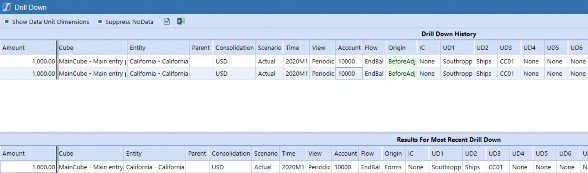
Figure 7.1
Data Troubleshooting › General Troubleshooting Tools › Drill Down
Drilling on Import Cells
If the base intersection is an O#Import cell, you can right-click the intersection and select Load Results for Imported Cell.
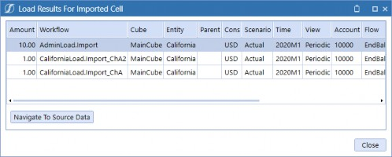
Figure 7.2
Clicking the Navigate to Source Data button will open the Source Data Drill Down window, as shown below, which gives you even more granular detail. From this window, you can right-click on a source intersection row to give you even more options:
Drill back to the source file that was loaded.
View what transformation rules the cell passed through from Stage to the cube.
Drill back to the source system (though this would require a connector rule and additional configuration on your data).
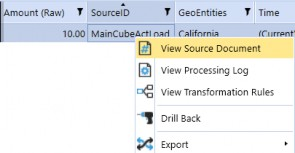
Figure 7.3
Data Troubleshooting › General Troubleshooting Tools › Drill Down
Drilling on Forms and Adjustment Cells
If the base intersection is a O#Forms or O#AdjInput cell, you can right-click the intersection and select Audit History for Forms or Adjustment Cell. This will show you the full history of who submitted data to this intersection, when they submitted it, and what method was used.
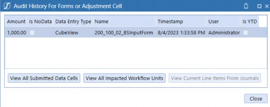
Figure 7.4
Data Troubleshooting › General Troubleshooting Tools
Quick Views
Quick Views in Excel spreadsheets are an excellent tool when investigating intersections in your cube. However, it is sometimes a bit of a pain to spin up Excel, create a Quick View, and fill in the entire Quick View POV. A nice tip is that you can swiftly create Quick Views with fully specified POVs by right clicking a cell and selecting Create Quick View Using POV From Select Cell.
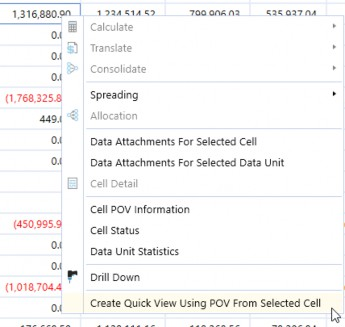
Figure 7.5
This will open up a new Spreadsheet tab in your OneStream window, and create a Quick View with the same POV as the selected cell already populated.
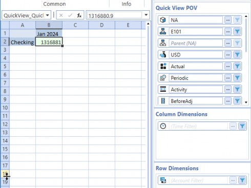
Figure 7.6
Data Troubleshooting › General Troubleshooting Tools
Clearing Inputted Data
Sometimes, you might have to clear data from your cube; for instance, if you suspect you have old data floating around in your cube. Here are a couple of options for handling this.
Data Troubleshooting › General Troubleshooting Tools › Clearing Inputted Data
Clear Through Workflows
To clear loaded O#Import or O#Forms data, right-click the workflow step and select either Clear All ‘Import’ Data From Cube or Clear All ‘Forms’ Data From Cube, respectively. This will clear data that was previously loaded through this workflow, across all base input workflows.
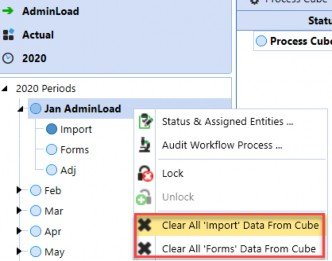
Figure 7.7
Data Troubleshooting › General Troubleshooting Tools › Clearing Inputted Data
Clear Forms Data on Cube Views
Provided the Cube View settings are configured to allow for data modification, you can clear data directly from Cube Views by clearing out each cell. A nice trick is that you can shift-select multiple cells and hit ctrl+x to cut them all out!
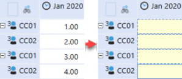
Figure 7.8
Note: Something to be aware of is that if the cell POV is set to O#BeforeAdj, you can only clear out the O#Forms data and not the O#Import data. This is confusing when it occurs, since you can clear the cell but once you click save, the O#Import value will reappear. |
Data Troubleshooting › General Troubleshooting Tools › Clearing Inputted Data
DM Sequence
To clear import, forms, or adjustment data from an entire Data Unit, you can create a clear data management step and specify which origin members to clear.
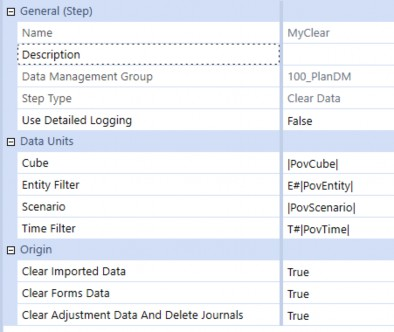
Figure 7.9
Data Troubleshooting › General Troubleshooting Tools
ClearCalculatedData Method
The most common method for clearing calculated data is the api.Data.ClearCalculatedData method. When this method is called, the finance engine takes into account the active Data Unit; in other words, it will only clear data from the current Data Unit. Also, from a technical standpoint, this method will only clear cells that have their StorageType as “Calculation”; it won’t clear loaded O#Import data or manually entered O#Forms data.
Another important note is that this method is overloaded. For the first version, there is no clearDurableCalculatedData parameter, so calling this method means durable data will not be cleared. If you do want to clear durable data, then you’ll need to call the second version below, passing in True for clearDurableCalculatedData.
DataApi.ClearCalculatedData(clearCalculatedData As Boolean, clearTranslatedData As Boolean, clearConsolidatedData As Boolean, clearDurableCalculatedDataAsBoolean, Optional accountFilter As String, Optional flowFilter As String, Optional originFilter As String, Optional icFilter As String, Optional ud1Filter As String, Optional ud2Filter As String, Optional ud3Filter As String, Optional ud4Filter As String, Optional ud5Filter As String, Optional ud6Filter As String, Optional ud7Filter As String, Optional ud8Filter As String)
You can restrict the clear by passing in Member Filters. If you don’t pass in any arguments for these filters, then OneStream will clear all members in the current Data Unit. Here are some examples of how to call this method:
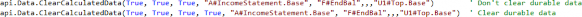
Figure 7.10
Note: Do not use brackets when passing arguments into Member Filter arguments. OneStream will ignore any statement with brackets. It technically won’t throw any runtime errors, but it just won’t clear anything. For example, |
It’s not common, but if you know exactly the base members you would like to clear, you can call another version of this method where you pass in a data buffer string (e.g., A#10000:F#EndBal).
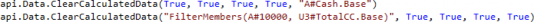
Note: You cannot use expansions or use the Figure 7.11 |
DataApi.ClearCalculatedData(dataBufferScript As String, clearCalculatedData As Boolean, clearTranslatedData As Boolean, clearConsolidatedData As Boolean, clearDurableCalculatedDataAsBoolean)
Data Troubleshooting › General Troubleshooting Tools
SetDataBuffer Method
While the api.Data.ClearCalculatedData method allows you to clear calculated data, it does not allow you to clear inputted data. The api.Data.SetDataBuffer method is less common, but is more flexible in that it allows you to do just that – clear both inputted and calculated data.
The general idea with this technique is to pull the intersections you want to clear into a databuffer, then set all of the cell values to 0 along with the cell statuses to NoData. Let’s cover a couple of examples.
Data Troubleshooting › General Troubleshooting Tools › SetDataBuffer Method
Clear All Data
Here is an example that clears both inputted and calculated data (technically, it can clear consolidated data as well). There’s a lot going on here, so let’s go line by line.
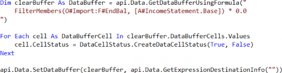
Figure 7.12
We limit the clear by specifying specific intersections to pull into our clearBuffer databuffer using the FilterMembers function. Here, we are saying we only want to clear O#Import cells, the EndBal Flow member, and Base income statement accounts. Note that this data buffer will include both inputted and calculated cells, since O#Import only refers to the origin, and not the StorageType.
During the initial query stage, where we pull the data buffer, we set the values of all cells to 0 by multiplying the buffer by 0. This is just a shortcut; we could also just pull the buffer as is, then manually set the cell values to 0 later, when we iterate through the cells.
In the loop, we set each cell as NoData by passing in True to the isNoData parameter for the
CreateDataCellStatus method.
Finally, we call the api.Data.SetDataBuffer method to save the modified data buffer to the database. In this case, the modifications result in the data being cleared.
Note: Technically, setting the cells to NoData is the only requirement for clearing the cell. Setting the cell values to 0 is redundant but is done as good practice to convey intent (it’s more obvious that this code is clearing data when you can see cells are being set to 0). |
Data Troubleshooting › General Troubleshooting Tools › SetDataBuffer Method
Clear Only Calculated Data
Let’s build on the previous example by restricting it further to only include calculated cells. The example is a bit more complicated, which we’ll elaborate more on below.
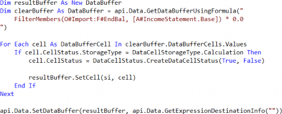
Figure 7.13
When we query intersections into clearBuffer, it contains both inputted and calculated data. However, we want to remove inputted cells from this buffer, since we only want to clear calculated data. Unfortunately, VB.NET does not allow you to remove objects from an iterable object (e.g., a collection) as you are iterating through it. Because of this, we must declare resultBuffer as an empty DataBuffer, and then use that as the container for the cells we want to clear.
In the loop, we now add a condition to check for whether the source cell has StorageType of Calculation. If it does, then we set the cell status to NoData, and then add it to our resultBuffer.
Finally, we pass the new resultBuffer to the SetDataBuffer method instead of passing clearBuffer as we did in the previous example.
Note: While this technique does work to clear calculated data, in general, it’s better to stick to api.Data.ClearCalculatedData – it’s more efficient and less verbose. But it is important to be aware of this option, as it can give you some finer control in situations where you have very specific cells you need to clear. |
Data Troubleshooting
Debugging Inputted Data
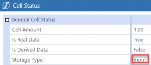
Tip: You can see whether data is inputted, calculated, translated, or consolidated by right clicking a cell in a report and selecting Cell Status. To use this feature, the cell must be comprised of base members only. Figure 7.14 |
This section covers input data that is loaded via workflows or entered to forms. Data loaded this way will be tagged with either the O#Import or O#Forms Origin members, and will have cell status of Input. Journal entries can be treated similarly as input data, but note that journal data is tagged with the AdjInput Origin member and will have cell status of Journals.
Data Troubleshooting › Debugging Inputted Data
Inputted Data Clearing Unexpected
This section covers why data loaded through workflows can clear, as well as why data in your
Stage tables aren’t appearing in your cube as expected.
Data Troubleshooting › Debugging Inputted Data › Inputted Data Clearing Unexpected
Data Cleared Manually
We start by covering an often-overlooked possibility – someone ran a clear without you realizing. Data loaded via workflows can be cleared directly from the workflow. To see if this occurred, you could view the Task Activity logs. To narrow down your searches, filter on Task Type to show only Clear Cube Data For Workflow. From here, you could filter further on Description to see if anyone cleared the data from your specific workflow.
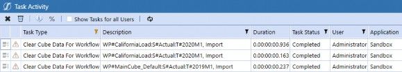
Figure 7.15
In this example, someone has manually cleared all imported data loaded by the CaliforniaLoad workflow.
Data Troubleshooting › Debugging Inputted Data › Inputted Data Clearing Unexpected
Overlapping Data Loads
It’s possible for two workflow base import profiles to load to the same intersections. If this happens, OneStream looks at your workflow settings to decide how to handle conflicts. Depending on your setting, it’s possible for the last processed workflow to overwrite previous data loads, throwing off your totals if you’re expecting an aggregated result instead. There are several cases to consider, but this one is really the one you must be most careful of.
We’ll cover this at a pretty high level, so if you’d like more details on this behavior and the available settings, refer to Chapter 6: Work the Workflow.
Data Troubleshooting › Debugging Inputted Data › Inputted Data Clearing Unexpected › Overlapping Data Loads
Base Input Profile with Sibling Import Children (Same WF Channel)
Let’s consider the following case, where you have a single base input profile CaliforniaLoad with two sibling import child profiles that have the same WF channel assigned – in this case ChA.
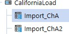
Figure 7.16
By default, when you trigger an import step, OneStream will check to see if there are any sibling imports that have already been completed. If there are, then OneStream will clear the previously loaded data and then reload, aggregating data as necessary. This behavior is controlled by the Load Overlapped Siblings on your workflow, which is True by default.
However, if you set the Load Overlapped Siblings setting on your workflow to False, OneStream does not bother to check if there are any conflicts! If two workflows attempt to load to the same cells, the last processed workflow will overwrite the previous workflow’s load (i.e., last one in wins).
For example, let’s load $1 using Import_ChA, and then $1 using Import_ChA2 to the same intersection. If your Load Overlapped Siblings value is set to False, once both loads complete, the final value of the cell is $1. Instead of aggregating the two loads to get $2, as you might expect, the
$1 from the Import_ChA2 overrides the initial load from Import_ChA. In fact, if you drill down on the cell details, you can even see that the audit history shows both loads from each workflow.
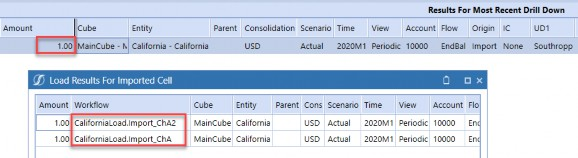
Figure 7.17
Data Troubleshooting › Debugging Inputted Data › Inputted Data Clearing Unexpected › Overlapping Data Loads
Base Input Profile with Sibling Import Children (Different WF Channels)
In the previous case, both import child profiles shared the same workflow channel. However, let’s consider the case where a sibling import child profile is assigned AllChannelInput instead.
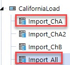
Figure 7.18
You might expect OneStream to flag that AllChannelInput means there could be potential overlaps. However, OneStream only checks for overlapping data intersections if the workflow channels are exactly the same, even if they are siblings. Since AllChannelInput and ChA are different, OneStream doesn’t bother to check; instead, it will take the last processed workflow and overwrite previous loads.
Data Troubleshooting › Debugging Inputted Data › Inputted Data Clearing Unexpected › Overlapping Data Loads
Multiple Base Input Workflows
Let’s now consider the final case, when there are multiple sibling base input workflows (CaliforniaLoad and AdminLoad) with import child profiles that load to the same intersections.
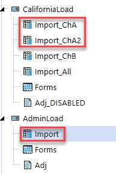
Figure 7.19
In this situation, the workflow channel assigned to import does not matter: it doesn’t matter if AdminLoad.Import is assigned AllChannelInput or ChA. Because AdminLoad.Import is not a sibling of Import_ChA or Import_ChA2, the workflow engine does not check if there are any overlaps. In this case, the last processed workflow will overwrite any previous loads.
For example, say we load $1 via Import_ChA, $1 via Import_ChA2, and $10 via AdminLoad.Import in that order. The audit history will display all three loads, but because AdminLoad.Import was loaded last, the cube will reflect $10.
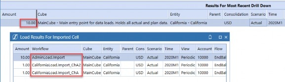
Figure 7.20
Data Troubleshooting › Debugging Inputted Data
Data in Stage Not Tying to Cube
Data Troubleshooting › Debugging Inputted Data › Data in Stage Not Tying to Cube
Incorrect Transformation Rules
If you see your data in the Stage table, but can’t find the data in the cube, this is a sign that you may need to investigate your transformation rules. There are really two main things to check here:
Check if the Stage member is mapped to the correct member in the cube. If your mappings are incorrect, the cube totals will reflect this.
Check that members are not mapped to (Bypass). Members that are mapped to (Bypass) are not loaded to the cube at all!
You can see what the Stage records have been mapped to after running through the transformation rules by going to the Validate step on your Import workflow.
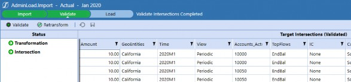
Figure 7.21
If you make any updates to your transformation rules, you will need to go back to the Validate step and click Retransform for the changes to apply.
Data Troubleshooting › Debugging Inputted Data › Data in Stage Not Tying to Cube
Data Cleared From Stage
A common misconception is that the Clear button on the import step will clear data from the cube. However, it only clears data from the Stage table, and will leave previously imported cube data alone. This can be misleading since the empty Stage table makes it seem as if no data was loaded to the cube.
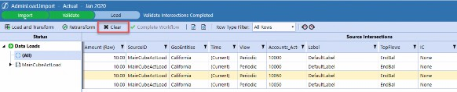
Figure 7.22
Data Troubleshooting › Debugging Inputted Data
Derived Periodic/YTD Amount Incorrect
Data Troubleshooting › Debugging Inputted Data › Derived Periodic/YTD Amount Incorrect
Incorrect NoDataView Settings
Let’s begin by recalling that when you load data to a period, and the next period has no data, OneStream has logic that determines what that NoData means. To summarize, the No Data Zero View for Adjustments and No Data Zero View for NonAdjustments settings allow you to specify whether NoData means that the YTD value is 0, or the periodic value is 0 for a given account. This applies mainly to income statement accounts, where periodic and YTD amounts are treated differently.
Let’s consider this example, where the NoDataZeroView settings for the scenario and account are YTD, and no data is loaded to revenue in February. Here, OneStream derives a 0 value for the YTD view, as shown below. However, to reconcile the YTD and periodic amounts, OneStream backs into a -$100 amount for the periodic view. If your user is expecting the YTD amount to carry forward, then you would need to change the NoDataZeroView settings to Periodic.
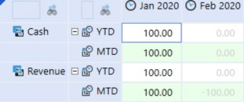
Figure 7.23
Something to consider is that because NoData is not necessarily the same as 0, you must be extremely careful when preparing your source files and configuring your data sources for loads. A common assumption is that if you leave income statement amounts as null, you will see 0 periodic activity in each month. However, as mentioned before, if the NoDataView setting is set to YTD, then OneStream will assume that null data means you want 0 YTD in each month, and derive a negative periodic amount in each month instead.
If this isn’t the behavior you are expecting, you might have to load zeros, or change the NoDataZeroView settings. However, you’ll have to be careful in deciding your approach as changing the NoDataZeroView settings will have many upstream and downstream effects.
Refer to Chapter 4’s Scenario and Account NoDataView Settings for more details.
| Note: OneStream calculates and stores these derived values when the first real value is loaded to the database; it does not do it on the fly. What this means is that in the unlikely situation where you change NoDataZeroView settings on your scenario or account, you might need to reload your data or reconsolidate in order to get the derived values to update. |
Data Troubleshooting › Debugging Inputted Data › Derived Periodic/YTD Amount Incorrect
Incorrect View on Data Load
In general, the source files you load to Import workflows should match the same view (YTD / periodic) as your system settings. In other words, if your scenario is set as a YTD scenario, you would want to specify in your data source that the file contains YTD amounts.
For example, suppose we have the following file, and the data source is configured to load to periodic amounts.
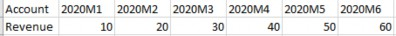
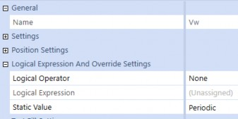
Figure 7.24
With this configuration, the YTD amounts would be an accumulation of the loaded periodic activities, as shown below. This isn’t necessarily wrong, but often the expectation is for the YTD amounts in reports to match the file exactly.
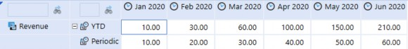
Figure 7.25
To get this behavior, you would have to change the data source to YTD, and then reload. This would result in the following values, where the YTD amounts match the file.
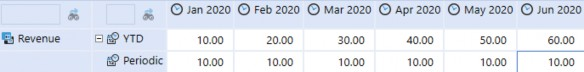
Figure 7.26
When loading though workflows, there are also three additional settings you must consider. This gives you additional control over how NoData is handled for specific accounts.
Flow type no data zero view override (YTD/Periodic).
Balance type no data zero view override (YTD/Periodic).
Force balance accounts to YTD view (True/False).
| Note: Balance accounts, here, refers not to balance sheet accounts with an Account Type of Asset or Liability, but an Account Type of Balance specifically. |
Data Troubleshooting › Debugging Inputted Data
Stale Forms Data
When an import is triggered, the workflow engine will first clear previously imported data. This is critical for data integrity, as it clears old O#Import data from the system and ensures that all newly imported data is up to date.
However, there isn’t an equivalent for inputted O#Forms data, which is either entered manually to forms, or loaded via Excel submission templates, and must therefore also be cleared manually. This becomes a problem when loaded or calculated data changes, but there is underlying O#Forms data that is now stale, which can throw off expected totals.
For example, suppose you loaded $100 to A#Cash and O#Import, and then subsequently entered a
$50 adjustment to O#Forms to get to a final $150 at O#Top. If you then reload the O#Import data as $75, your new total at O#Top would be $125. To get back to the final amount of $150, you’ll have to override the stale O#Forms adjustment to $75.
Data Troubleshooting
Debugging Calculated Data
This section covers calculated data that is calculated via business rules or Member Formulas. Before we continue, let’s briefly cover some background on how OneStream handles calculated data. When any calculated data is generated, it is tagged with cell status of “Calculation” or “DurableCalculation”.
Recall that when a calculation, translation, or consolidation is run, OneStream – as the first part of the Data Unit Calculation Sequence (DUCS) – will clear calculated data. However, it’s important to note that OneStream will only clear regular, non-durable calculated data, and will not clear durable data as part of the DUCS.
Generally, data generated by Member Formulas as well as business rules attached to the cube, should be calculated as non-durable so that they clear and recalculate on the next consolidation. In contrast, data generated by custom calculate business rules triggered by events (e.g., on button presses) should be calculated as durable so that they don’t clear unintentionally when consolidations are run.
With that said, many of the common situations and reasons for data not getting calculated correctly, or even worse – for clearing in inconsistent or unexpected ways – are due to a mix-up handling durable and non-durable data. While this list isn’t exhaustive, it hopefully gives you a good starting point when troubleshooting.
Data Troubleshooting › Debugging Calculated Data
Non-Durable Data Getting Cleared
One common scenario is data calculated in business rules clearing due to timing. If your users are seeing data in a report one day, and then not seeing it the next, the first thing you should check is whether that data is getting calculated as durable.
To calculate data as durable, you can either use the api.Data.Calculate or api.Data.SetDataBuffer methods, and pass True as the argument into isDurableCalculatedData. Here are the parameters for these methods:
DataApi.Calculate(formula As String, Optional accountFilter As String, Optional flowFilter As String, Optional originFilter As String, Optional icFilter As String, Optional ud1Filter As String, Optional ud2Filter As String, Optional ud3Filter As String, Optional ud4Filter As String, Optional ud5Filter As String, Optional ud6Filter As String, Optional ud7Filter As String, Optional ud8Filter As String, Optional onEvalDataBuffer As EvalDataBufferDelegate, Optional userState As Object, Optional isDurableCalculatedData As Boolean)
DataApi.SetDataBuffer(dataBuffer As DataBuffer, expressionDestinationInfo As ExpressionDestinationInfo, Optional accountFilter As String, Optional flowFilter As String, Optional originFilter As String, Optional icFilter As String, Optional ud1Filter As String, Optional ud2Filter As String, Optional ud3Filter As String, Optional ud4Filter As String, Optional ud5Filter As String, Optional ud6Filter As String, Optional ud7Filter As String, Optional ud8Filter As String, Optional isDurableCalculatedData As Boolean)
Unfortunately, both of these functions are overloaded (meaning that there are several versions of these methods), and it is possible to call versions where nothing is passed to isDurableCalculatedData (in which case it defaults to non-durable). It’s also common to accidentally pass this as False, especially when copying and pasting lines from other business rules.
For example, both of these lines look fine and won’t trip any runtime errors but will generate non-durable data! In both of these cases, after you run your calculation, you will see your calculated data in your reports initially, but if a user runs a consolidation in the future, that data will clear.
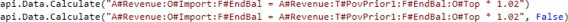
Figure 7.27
This is what you must check for when debugging. To correct this issue, simply pass in True! This is what the “durable” versions of the previous lines will look like. Of course, the same idea will apply to calls to api.Data.SetDataBuffer.
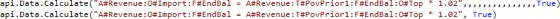
Figure 7.28
| Note: Again, this mainly refers to data generated by custom calculate business rules, which generally are triggered on specific events like button presses and are not intended to clear on consolidation. |
Data Troubleshooting › Debugging Calculated Data
Stale Durable Calculated Data
The flip side to calculated data clearing unexpectedly is calculated data not clearing as expected. Because durable data never clears automatically as part of the DUCS, calculating data as durable and neglecting to clear it will result in stale data.
In order to avoid this issue, it’s good practice to add logic at the beginning of rules to first clear the target intersections of previously calculated data. To clear calculated data, the most common way is to use the api.Data.ClearCalculatedData method. For more details, see the section: Clearing Calculated Data.
For example, suppose I have an allocation rule that spreads values to income statement accounts based on inputted drivers. The rule calculates data as durable, but doesn’t have any logic to explicitly wipe allocated amounts.
The first time I run the calculation, I allocate $10 to AccountA, and $10 to AccountB. But let’s say
I want to allocate the full $20 to AccountA. I change my drivers, and then rerun the calculation. The second run will result in $20 in AccountA which is correct, but $10 in AccountB which was leftover from the last run.
If you’re finding that durable data is not getting cleared on recalculation, there are three main things to check.
Data Troubleshooting › Debugging Calculated Data › Stale Durable Calculated Data
Clear Missing Completely
First, check if there is clear logic at the beginning of the rule. For example, to clear the stale data from the previous example, you can add this line:
Figure 7.29
Data Troubleshooting › Debugging Calculated Data › Stale Durable Calculated Data
Incorrect Filter Strings
If there is a clear statement at the beginning of the rule, then the next step would be to check if the filter strings look correct. It’s fairly easy to place a filter string to the wrong parameter, make a typo in the parent, or even pass in the wrong parent.
For example, all of the following lines would clear no data, but also not throw any runtime errors!
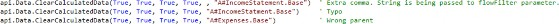
Figure 7.30
Data Troubleshooting › Debugging Calculated Data › Stale Durable Calculated Data
Calling Wrong Overloaded Version
Like api.Data.Calculate, the api.Data.ClearCalculatedData method is overloaded. It’s possible to call the wrong version, and pass in nothing to the clearDurableCalculatedData parameter. This is one of the most commonly overlooked reasons for durable data not clearing.
For example, this code looks fine and will not throw any runtime errors, but will not clear durable data at all. Comparing it to the correct example from the section above, you can see that there are only three True arguments passed in.
Figure 7.31
Data Troubleshooting › Debugging Calculated Data
Durable Data Getting Cleared
If durable data is clearing due to timing, then you should check whether there are business rules being triggered that explicitly clear data. It’s common for these clears to not be sufficiently constrained, leading to them over-clearing intersections that were not supposed to be cleared.
Data Troubleshooting › Debugging Calculated Data › Durable Data Getting Cleared
Overclearing Data
Let’s discuss what causes overclearing. To clear calculated data, the most common way is to use the api.Data.ClearCalculatedData method. However, if your Member Filters are not sufficiently constrained, you might clear more intersections than intended. For example, if I only want to clear income statement accounts, then I must pass in A#IncomeStatement.Base to the accountFilter parameter. If I pass in nothing, then the clear will apply to all accounts. These filter strings are what you’ll have to check when troubleshooting.
Data Troubleshooting › Debugging Calculated Data › Durable Data Getting Cleared
How to Find Rogue Clears
Let’s cover where to look for these rogue clears, so you aren’t blindly combing through each business rule one-by-one. Typically, these clears are only added to custom calculate business rules that generate durable data. Explicit clears are redundant in regular calculations, where you typically calculate data as non-durable and allow the finance engine to clear that calculated data automatically as part of the DUCS.
The easiest approach is to figure out which button – when pressed – is causing data clearing issues. You can then trace which data management sequence is attached to that button, which will point you to the custom calculate business rule you’ll need to debug. From there, you can search for calls to api.Data.ClearCalculatedData and evaluate whether the clears make sense.
Note: It’s also possible to clear data via the api.Data.SetDataBuffer method. If you don’t see any ClearCalculatedData calls, then keep an eye out for this other clear pattern. |
Data Troubleshooting › Debugging Calculated Data
Business Rules Triggering in the Wrong Order
Almost inevitably, certain calculations will have dependencies on other calculations. Troubleshooting calculations with dependencies can be extremely hard to diagnose, especially if there is durable data involved, because your calculated values can change from run to run even when no data has changed. If you are suspicious that you have dependency issues, then there are two main reasons, which we’ll cover now.
Data Troubleshooting › Debugging Calculated Data › Business Rules Triggering in the Wrong Order
Incorrect Business Rule Order of Operation
If your calculations are contained in business rules attached to the cube, and spread across Member Formulas, then the Data Unit Calculation Sequence will apply. Refer to the Design and Reference Handbook for more details, but for convenience, here are the steps performed by the finance engine when a calculation is triggered:
Clear previously calculated data for the Data Unit.
Run the scenario’s Member Formula.
Run reverse translations by calculating Flow members from other alternate currency input Flow members.
Execute Business Rules 1 and 2.
Run Formula Passes 1-4 for the cube’s Account dimension members, then Flow members, and then User-Defined members.
Execute Business Rules 3 and 4.
Run Formula Passes 5-8.
Execute Business Rules 5 and 6.
Run Formula Passes 9-12.
Execute Business Rules 7 and 8.
Run Formula Passes 13-16.
The key idea here is that OneStream executes business rules and Member Formulas in a specific order that you can configure. This can get complex quickly, especially if there are many dependencies between rules.
For example, suppose we have a business rule called CalcDepreciation to calculate depreciation, which depends on my asset accounts having values. Here, the rule is attached to the cube as Business Rule 7.
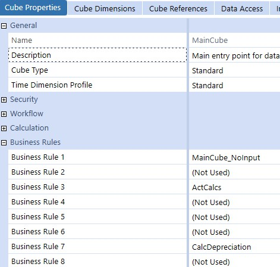
Figure 7.32
Let’s also say that asset accounts are calculated as Member Formulas, which are all configured as
FormulaPass16.
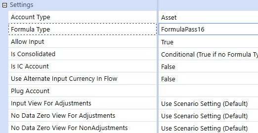
Figure 7.33
In this case, this configuration would mean that when we run a calculation on my cube, we would not see any depreciation amounts. Per the DUCS, CalcDepreciation would run first as Business Rule 7, and the Asset account as FormulaPass16 would run next. The fix, in this case, would be to set the Asset account as FormulaPass9 (or any formula pass that runs before Business Rules 7 and 8).
Data Troubleshooting › Debugging Calculated Data › Business Rules Triggering in the Wrong Order
Incorrect DM Sequence Setup
If your calculations are custom calculations attached to data management steps, then you should check the data management sequence in question and confirm that 1. all of the calculations you expect are included in the sequence and 2. the steps are in the right order.
For example, say we have a set of plan calculations that are dependent on seeded data. Here, we can confirm that 1. the seed step with the seed business rule attached is assigned to my data management sequence, and 2. the seed step executes before my other plan calculations. This is a simplified example, but a more realistic example is a developer creating a new plan business rule, but neglecting to add the new rule to a data management sequence.
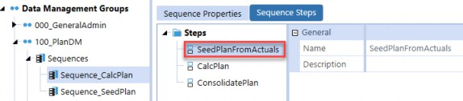
Figure 7.34
Let’s now consider a more complex example that illustrates how dependency issues can cause apparently bizarre behavior. Suppose we have two custom calculate business rules to calculate planned assets and depreciation: CalcAssets and CalcDepreciation. Ideally, assets should be calculated first, based on some drivers, and then depreciation should be calculated as a percentage of those assets (let’s say 20% for the sake of this example). However, let’s say we accidentally configure depreciation to calculate before assets and walk through how our values would change from run to run:
1. Run 1
CalcDepreciation executes. Depreciation amounts would be $0, since assets haven’t been calculated yet.
CalcAssets executes. Assets show as $100.Immediately, there is a variance, as the expected depreciation amount is $20.
2. Run 2
CalcDepreciation executes. Depreciation is calculated as $20 off the $100 assets.
CalcAssets executes. However, the drivers have changed, and assets now recalculate as$200.
There is again a variance, since you would expect the depreciation to be $40.
3. Run 3
CalcDepreciation executes. Depreciation is calculated as $40.
CalcAssets executes. Drivers remain the same, and so assets remain as $200.This is confusing since the values for assets and depreciation are changing from run to run, and it takes a minimum of two runs for the calculated amounts to look correct, even when no underlying data has changed. This is why debugging this sort of behavior can be a complete nightmare, but this example hopefully highlights what to look for if you notice strange cyclical behavior.
Data Troubleshooting › Debugging Calculated Data
Inconsistent Calcs Over Scenarios
If your calculation is running correctly on one scenario but not another, here are three possible reasons.
Data Troubleshooting › Debugging Calculated Data › Inconsistent Calcs Over Scenarios
Member Formulas Not Set On Scenario Type
A member can have different Member Formulas for each Scenario Type. A common mistake is to create a Member Formula on one Scenario Type, and neglect to copy the logic to other Scenario Types. For example, here, the member has a Member Formula for Actual scenarios, but nothing for Plan scenarios.
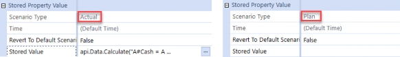
Figure 7.35
On the flip side, it’s also common to place a Member Formula on Default, which would mean the calculation would run on every scenario, when really the formula should have been placed on a single Scenario Type.
Data Troubleshooting › Debugging Calculated Data › Inconsistent Calcs Over Scenarios
Incorrect Order for Formula Passes
Because formula passes for Member Formulas are set directly on the members themselves, and cannot be assigned by Scenario Type, there is no way to have Member Formulas trigger in different orders depending on the scenario.
For example, if you wanted a driver Member Formula to run on Formula Pass 1 for Actual scenarios, but on Formula Pass 4 for Plan scenarios, you would need to find a different solution. One option would be to move the driver calculation to business rules attached to the cube instead, and add conditions to check for Scenario Type.
Data Troubleshooting › Debugging Calculated Data › Inconsistent Calcs Over Scenarios
Business Rule Conditions
This is a bit harder to find, but another thing to check is control flow statements in business rules directly. Sometimes, conditions in your business rules are designed in a way where they might not trigger for your current Data Unit. An effective way to check is to add log messages in your code to confirm that your desired conditional branches are being reached.
For example, this business rule is constrained to only run on scenarios with the Actual Scenario Type.
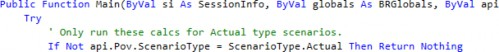
Figure 7.36
Data Troubleshooting › Debugging Calculated Data
Cube Business Rules Not Triggering
If you are triggering a calculation or consolidation and finding that your business rule does not seem to be running, consider running a forced calculation instead. Calculations will only run on Data Units if the status of their base data has changed. If base data has not changed, even if you modified your business rule, OneStream will think that it does not need to recalculate that Data Unit. This specific issue usually only comes up when a new business rule is being written; once rules are stable, you can be confident that running regular calculations is sufficient.
Data Troubleshooting
Debugging Consolidated Data
This section covers consolidated data at parent entities. Data generated by the finance engine during the consolidation process will have cell status of “Consolidation”.
If data looks correct at your base entities, but isn’t consolidating up to parent entities, then here is a list of things to check. We also cover what happens if your base member amounts are not rolling up to parents correctly in reports. Many of these settings are referenced in the Dimension Member Management section of Chapter 4.
Data Troubleshooting › Debugging Consolidated Data
Consolidation Not Current
The first thing you should do if you see that your consolidated data at your parent entity does not match the data at your base entities is to check your cube’s calculation status. This can be done by building a Cube View with entities in the rows, and the view member set to V#CS. See the Design And Reference Handbook section on Calculation Status for more details.
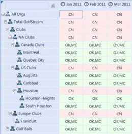
Figure 7.37
If you see CN, that means descendant entity data has changed, and you’ll need to reconsolidate. This is basically the OneStream equivalent of “Have you tried turning it off and on again?” It might seem overly simple, but we can’t count the number of times a simple reconsolidation is all that’s necessary to get numbers rolled up correctly.
Data Troubleshooting › Debugging Consolidated Data
Consolidating Wrong Hierarchy
Consider the following two dimensions. CorpEntities is assigned to the MainCube, while
GeoEntities is assigned to the SubCube.
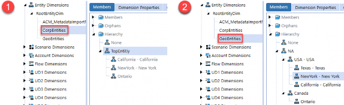
Figure 7.38
Here, if you were to consolidate the E#NA on the MainCube, then all of the base children under TopEntity will get recalculated. Reporting on California on both MainCube and SubCube would look correct. However, because you haven’t explicitly consolidated E#NA on the SubCube, if you tried to report on NA, nothing would be there.
This is a subtle mistake because it’s easy to assume that running a consolidation on the top entity of your main cube would mean that all of the base entities would get recalculated, and the top entity of your sub cube would be correct. However, the top entity of your main and sub cubes might not match, and recall that OneStream will only consolidate values up to the parent entity specified in the Data Unit.
To correct this, you would need to add a consolidation for NA to your data management sequence, after the consolidation for TopEntity, in order for all entities to have updated values.
| Note: In this case, you should use a regular consolidation rather than a force consolidation for the second consolidation step. Otherwise, you would be unnecessarily double calculating all of your base entities. |
Data Troubleshooting › Debugging Consolidated Data
Entity Consolidation Settings
If you know that a consolidation was run recently, then the next thing you should check is the Is Consolidated setting on your entities. If your base and child entities are set to Is Consolidated as False, then you won’t see their amounts roll up to parent entities, so confirm that they are set to True.
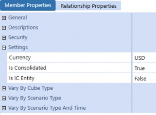
Figure 7.39
Next, check that your base and child entities have the correct Percent Consolidation percentage. It’s common to accidentally set this as 0 for a use-case and forget, or to copy an entity’s settings and neglect to update this value. Also, something to be careful of is that because an entity can belong to multiple hierarchies, it can actually have multiple Percent Consolidation values for each respective hierarchy.
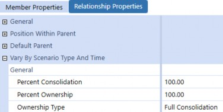
Figure 7.40
| Note: This setting varies by Scenario Type and time, so if your consolidation is working for certain Scenario Types, but not for others, this is something to consider. |
Finally, if you are finding that a base entity’s data is consolidating up, but data for specific members is missing, then check the Is Consolidated setting on the members themselves.
A common “gotcha” here is that the default value for non-Data Unit dimension members is Conditional (True if no Formula Type (default)). This means if you add a Member Formula onto a member to calculate its own values, it won’t consolidate up by default.
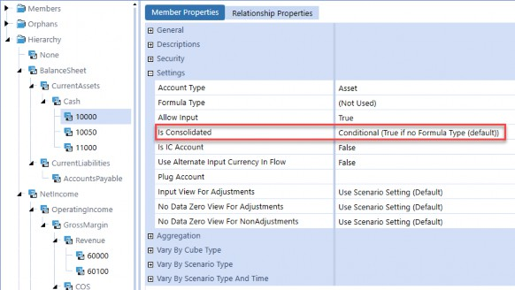
Figure 7.41
Data Troubleshooting › Debugging Consolidated Data
Aggregation Weights
Though this isn’t technically a consolidation issue, it’s similar enough, so we figured we would touch on it. If you are seeing that base members are not aggregating up to parent members, then check the base members’ Aggregation Weight setting. This setting is analogous to the Entity Percent Consolidation setting, but is present on Account, Flow, and UD members. If these settings are not correct, you might see that your revenue total does not include all of the base revenue account amounts.
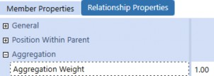
Figure 7.42
Data Troubleshooting › Debugging Consolidated Data
Translation Not Configured
If translation is not configured correctly, then base entities will have values at C#Local, but not at their parent entity currencies at C#Translated. Without these translated values, OneStream will have nothing to consolidate up to parent entities.
One reason translation might not be occurring is if your system is missing certain rates. If your Cube Translation Algorithm Type is set to Standard Using Business Rules for FX Rates or Custom, then you will need to open the corresponding business rule attached to the cube and see whether the correct rates are being returned or if the rule is not returning any rates at all.
For more details on translation configuration, see Chapter 5: Translation.
Data Troubleshooting
Conclusion
In this chapter, we covered a host of common data issues, explaining the several reasons underlying them as well as the approaches to solving them. We also covered some general troubleshooting techniques and pointed out common “gotchas” and strange idiosyncrasies that are confusing to new and experienced admins alike.
Troubleshooting data issues is one of the most frustrating and daunting tasks you will have to deal with regularly as an admin (trust us, we know). Hopefully, this chapter is structured intuitively so you don’t have to read it front-to-back, and can instead use it as an as-needed reference when you’re at your wit’s end. For you nerds out there, “May It Be a Light to You in Dark Places, When All Other Lights Go Out.”